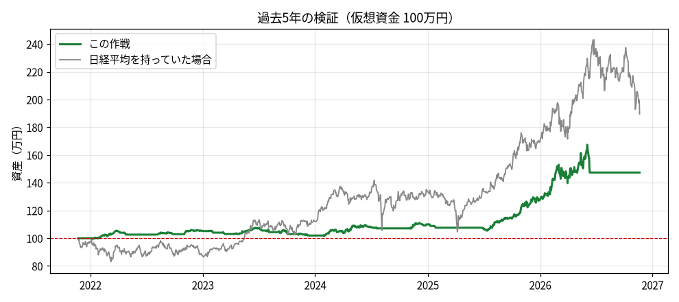

過去のデータでの検証
過去のデータで試した結果です。将来も同じになるとは限りません。
手数料（売買ごとに0.1%）と、注文が少し不利な値段で約定する分（0.1%）を差し引いています。
注意：企業の数字（ROE・PERなど）は「今の値」で会社を選んでいるため、過去の検証は実際より少し良く出る可能性があります。ニュースの判定は過去にさかのぼれないため、この検証には入っていません（毎日の仮想売買では使います）。
成績
| 開始資金 | 1,000,000円 |
|---|
| 現在の資産 | 1,571,969円 |
|---|
| 損益（税引前） | 571,969円 |
|---|
| 損益（税引後の目安） | 455,774円 |
|---|
| 利回り（税引前） | +57.2% |
|---|
| 年あたり利回り | +9.5% |
|---|
| 最大の落ち込み | -11.3% |
|---|
| 取引回数 | 41回 |
|---|
| 勝率 | 59% |
|---|
| 平均の勝ち | 30,812円 |
|---|
| 平均の負け | -9,854円 |
|---|
| プロフィットファクター | 4.41 |
|---|
| 払った手数料等 | 15,388円 |
|---|
| 税金の目安 | 116,195円 |
|---|
| 比較：日経平均を買って持っていた場合 | +107.6% |
|---|
| 対象になった会社数 | 4社 |
|---|

売買の記録（新しい順）
| 売った日 | 銘柄 | 株数 | 買値 | 売値 | 損益(円) | 理由 |
|---|
| 2026-06-11 | 住友電気工業 | 200 | 796 | 2,462 | +332,645 | 利益を守る売り(トレーリング) |
| 2026-03-04 | 住友商事 | 100 | 1,221 | 1,454 | +23,076 | 利益を守る売り(トレーリング) |
| 2026-01-06 | 住友商事 | 100 | 1,221 | 1,371 | +14,788 | 利益確定(半分) |
| 2025-11-04 | 住友商事 | 200 | 936 | 1,079 | +28,295 | 利益を守る売り(トレーリング) |
| 2025-09-08 | 住友商事 | 100 | 936 | 1,046 | +10,775 | 利益確定(半分) |
| 2025-08-08 | 丸紅 | 100 | 2,786 | 3,111 | +31,873 | 利益確定(半分) |
| 2025-08-05 | 住友電気工業 | 100 | 796 | 942 | +14,400 | 利益確定(半分) |
| 2025-07-02 | 住友電気工業 | 300 | 768 | 729 | -11,976 | 損切り |
| 2025-01-27 | 住友電気工業 | 300 | 726 | 687 | -12,370 | 損切り |
| 2025-01-10 | 住友商事 | 300 | 794 | 771 | -7,297 | 上昇トレンドが崩れた |
| 2024-12-25 | 住友電気工業 | 200 | 616 | 650 | +6,522 | 利益を守る売り(トレーリング) |
| 2024-11-21 | 住友電気工業 | 200 | 616 | 708 | +18,070 | 利益確定(半分) |
| 2024-07-19 | 住友商事 | 200 | 954 | 914 | -8,350 | 損切り |
| 2024-07-01 | 住友電気工業 | 300 | 445 | 575 | +38,638 | 利益を守る売り(トレーリング) |
| 2024-05-30 | 住友商事 | 200 | 844 | 920 | +15,009 | 利益を守る売り(トレーリング) |
| 2024-05-10 | 丸紅 | 100 | 2,444 | 2,830 | +38,130 | 利益確定(半分) |
| 2024-04-30 | 住友商事 | 100 | 844 | 979 | +13,374 | 利益確定(半分) |
| 2024-04-01 | 住友商事 | 300 | 852 | 814 | -12,013 | 損切り |
| 2024-03-12 | 住友商事 | 300 | 776 | 760 | -5,426 | 損切り |
| 2024-03-11 | 丸紅 | 100 | 2,337 | 2,230 | -11,238 | 損切り |
| 2024-02-22 | 住友電気工業 | 200 | 445 | 498 | +10,333 | 利益確定(半分) |
| 2023-12-08 | 住友商事 | 300 | 729 | 694 | -10,934 | 損切り |
| 2023-10-03 | 住友電気工業 | 600 | 410 | 392 | -10,787 | 損切り |
| 2023-10-02 | 住友商事 | 300 | 680 | 673 | -2,615 | 損切り |
| 2023-08-04 | 丸紅 | 100 | 2,266 | 2,155 | -11,617 | 損切り |
| 2023-08-04 | 住友電気工業 | 600 | 407 | 389 | -11,490 | 損切り |
| 2023-07-13 | 住友商事 | 200 | 539 | 641 | +20,083 | 利益を守る売り(トレーリング) |
| 2023-07-12 | 住友電気工業 | 600 | 394 | 382 | -7,955 | 上昇トレンドが崩れた |
| 2023-06-12 | 丸紅 | 100 | 1,776 | 1,999 | +21,870 | 利益確定(半分) |
| 2023-05-23 | 住友商事 | 200 | 539 | 602 | +12,254 | 利益確定(半分) |
| 2023-03-13 | 住友商事 | 500 | 530 | 508 | -11,551 | 損切り |
| 2023-03-13 | 丸紅 | 100 | 1,661 | 1,592 | -7,199 | 損切り |
| 2023-02-09 | 丸紅 | 100 | 1,386 | 1,551 | +16,187 | 利益確定(半分) |
| 2023-02-03 | 住友商事 | 500 | 504 | 483 | -11,124 | 損切り |
| 2023-01-04 | 丸紅 | 200 | 1,250 | 1,296 | +8,600 | 利益を守る売り(トレーリング) |
| 2023-01-04 | 住友商事 | 300 | 431 | 472 | +11,902 | 利益を守る売り(トレーリング) |
| 2022-11-11 | 住友商事 | 200 | 431 | 482 | +10,011 | 利益確定(半分) |
| 2022-09-26 | 住友電気工業 | 700 | 335 | 340 | +3,352 | 利益を守る売り(トレーリング) |
| 2022-04-27 | コマツ | 100 | 2,534 | 2,404 | -13,568 | 損切り |
| 2022-04-07 | 住友商事 | 400 | 354 | 418 | +25,537 | 利益を守る売り(トレーリング) |
| 2022-03-03 | 住友商事 | 300 | 354 | 400 | +13,753 | 利益確定(半分) |